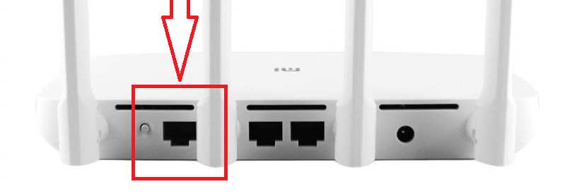
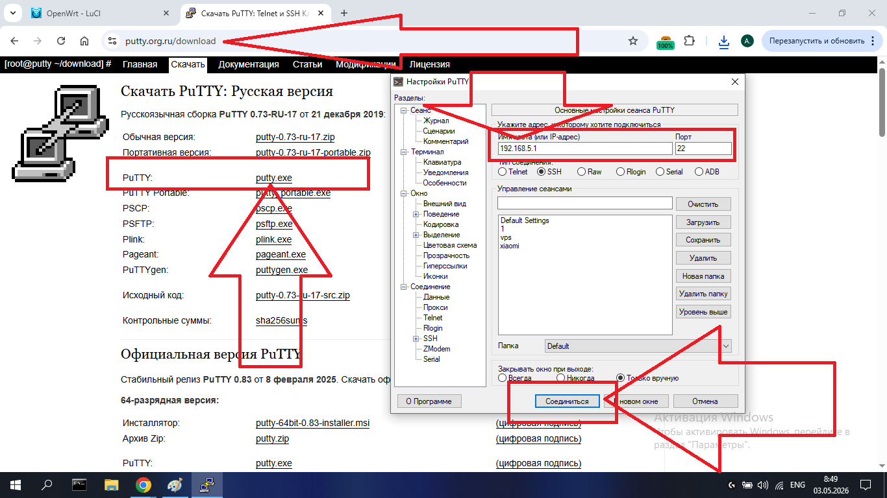
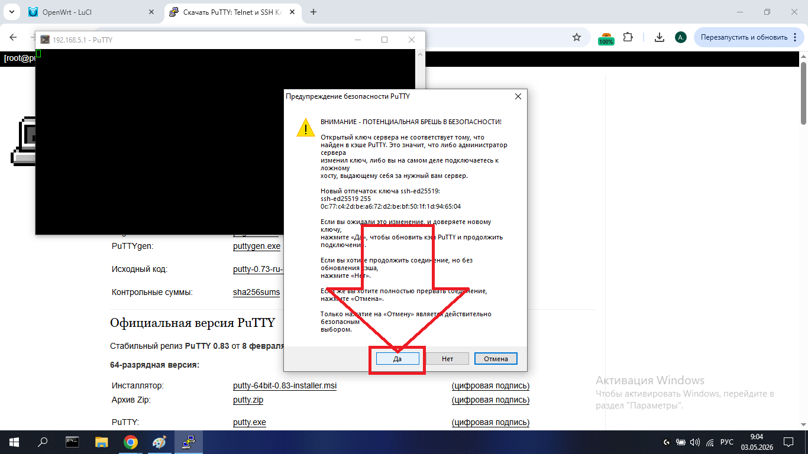
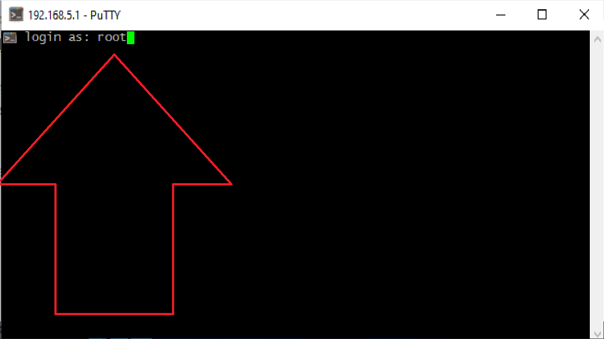
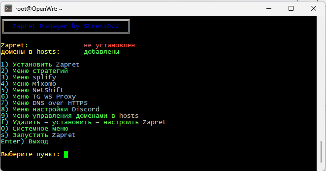
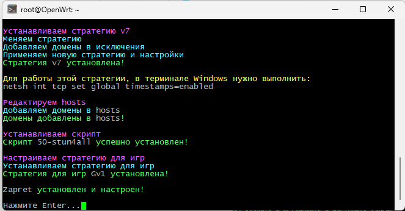
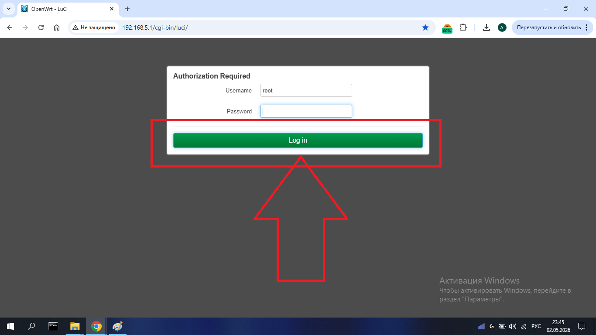

Руководство пользователя роутера
📶 Данные для подключения к Wi-Fi
Сети: openwrt, openwrt5g
Пароль: avito1234
🔗Подключение роутера
Самый простой способ — поставить купленный роутер вторым после вашего основного роутера.
- Вставьте один конец патч-корда в LAN-порт вашего основного роутера.
LAN-портов обычно несколько, они выделены цветом, отличным от WAN. - Второй конец — в WAN-порт купленного роутера.
WAN — порт для кабеля от провайдера. Он один и стоит отдельно.


Задняя панель Xiaomi 4a — выделен WAN-порт
✅Восстановление после сброса
После того, как вы произвели сброс роутера, нужно заново установить программу обхода блокировок:
- Скачайте Putty: putty.exe — либо по любой ссылке из интернета
- Запустите, в поле «Имя хоста (или IP-адрес)» введите 192.168.5.1, нажмите «Соединиться»


Вводим IP и нажимаем Соединиться
- Появится окно предупреждения безопасности — нажмите «Да»

- На запрос login as: введите root и нажмите Enter
Если ранее задавали пароль — введите его (символы при вводе не отображаются)


Вводим root и нажимаем Enter

- Скопируйте команду ниже, вставьте в терминал правой кнопкой мыши и нажмите Enter:

Вставляем команду правой кнопкой мыши и нажимаем Enter
sh <(wget -O - https://raw.githubusercontent.com/StressOzz/Zapret-Manager/main/Zapret-Manager.sh)- в меню программы вводим букву f и нажимаем Enter

- После того, как установка программы, и ее настройка завершится, можно закрывать putty.



🖥️Веб-панель управления
Подключитесь к Wi-Fi роутера (или соединитесь с ним через патч-корд), откройте любой браузер и перейдите по одному из адресов:
🌐Адрес 1: 192.168.5.1
Адрес 2: openwrt.lan/cgi-bin/luci/
Логин: root
Пароль: не задан — просто нажмите Log in 
Подключаемся к сети роутера, вводим адрес в браузере

Страница авторизации — пароль не нужен, нажимаем Login

🔁Сброс настроек и восстановление
Если вы проводили эксперименты с роутером или изменяли настройки, после чего он перестал работать — перед восстановлением необходимо сделать полный сброс до заводских настроек.
Способ 1 — кнопка на корпусе роутера
- Найдите кнопку Reset на корпусе роутера — обычно это маленькое отверстие или небольшая кнопка сзади или снизу устройства
- Возьмите скрепку или зубочистку и удерживайте кнопку 10–15 секунд при включенном роутере
- Роутер перезагрузится — светодиод начнёт мигать. Дождитесь полной загрузки (~2–3 минуты)
- После сброса подключитесь к роутеру — названия Wi-Fi сетей и пароль прежние (как при покупке). Состояние роутера — как при покупке, но без установленной программы обхода блокировок.
Способ 2 — через веб-панель
- Зайдите в веб-панель (192.168.5.1)
- Перейдите: System → Backup / Flash Firmware

- Нажмите кнопку Perform reset

- Подтвердите действие — нажмите OK — роутер перезагрузится

После сброса на роутер нужно установить обход блокировок и произвести быструю настройку
🆘 Что делать, если роутер не работает?
1. Проверка физического подключения
Прежде всего убедитесь, что всё правильно подключено — см. раздел «Подключение». Если подключение верное, но роутер не работает — просто перезагрузите его: вытащите вилку питания и вставьте обратно. В большинстве случаев это помогает.
🌐Установка роутера как основного
Если вы хотите установить купленный роутер как основной, прежде всего необходимо узнать у вашего провайдера интернета тип подключения и данные от него (при наличии). Вы можете это сделать позвонив провайдеру напрямую, либо задав соответствующий вопрос онлайн в службе поддержки или чат-боте. Ваш запрос может быть произвольным, например:
💬«Я приобрел(а) новый роутер и хочу его самостоятельно установить вместо старого. Назовите тип подключения и предоставьте по нему все необходимые данные.»
После того, как вы узнали данные — необходимо вставить интернет-кабель провайдера в WAN-порт приобретённого роутера. Убедитесь, что вы подключены к роутеру:

Убедитесь, что подключены к роутеру по Wi-Fi или кабелю
После подключения можно приступать к настройкам.
Существует огромное множество типов подключения к интернету, но наиболее распространены следующие три: PPPoE, По MAC-адресу и DHCP (автоматический). Также у провайдеров-операторов, например Билайн, подключение к интернету производится путём ввода логина и пароля на их специальном сайте (авторизация в личный кабинет). Важно: не путать данный тип подключения с PPPoE — о нём будет сказано ниже.
PPPoE
Для проведения настроек зайдите в веб-панель. Далее перейдите во вкладку сетевых настроек интерфейсов — Network → Interfaces:

Открываем Network → Interfaces
Здесь необходимо перейти в настройки WAN-интерфейса. Находим WAN-интерфейс (обычно второй по порядку) и нажимаем напротив него кнопку «Edit»:

Нажимаем Edit напротив WAN-интерфейса
Здесь мы видим параметр «Protocol» — его нам и необходимо поменять. Нажимаем на текущий протокол «DHCP» для открытия перечня протоколов: 
Нажимаем на DHCP для смены протокола
Выбираем протокол PPPoE и подтверждаем смену нажатием кнопки «Switch Protocol»:

Выбираем PPPoE и нажимаем Switch Protocol
После смены протокола необходимо заполнить данные подключения — логин («PAP/CHAP username») и пароль («PAP/CHAP password») в соответствующих полях:

Вводим логин и пароль PPPoE подключения
Убедитесь, что ввели данные правильно. После — сохраните настройки нажатием кнопки «Save»:

Нажимаем Save для сохранения
Мы видим, что наши изменения сохранились. Чтобы они применились и прописались на роутере, необходимо нажать кнопку «Save & Apply»: 
Нажимаем Save & Apply для применения настроек
После сохранения и применения настроек необходимо подождать, пока появится интернет-соединение — вплоть до 5–7 минут.
По MAC-адресу
Данный тип подключения осуществляется на основе индивидуального сетевого идентификатора вашего роутера — MAC-адреса. Для того чтобы поставить приобретённый роутер как основной при данном типе подключения, необходимо подключить интернет-кабель провайдера в WAN-порт роутера и позвонить или написать провайдеру (Поддержка / Чат-бот) с просьбой изменить MAC-адрес подключения к интернету, так как вы приобрели и установили новый роутер.
В большинстве случаев интернет-соединение после просьбы появляется в течение 5 минут. Никаких изменений настроек в самом роутере этот тип подключения НЕ ТРЕБУЕТ.
DHCP (автоматический)
Данный тип подключения является автоматическим и уже стоит при покупке роутера. В таком случае вам нет необходимости ничего настраивать на роутере — нужно лишь вставить интернет-кабель провайдера в WAN-порт.
Провайдеры-операторы (Билайн и подобные)
Данные операторы чаще всего предоставляют автоматический тип подключения — DHCP — то есть на самом роутере ничего настраивать не нужно, но они требуют авторизации на своём специализированном сайте. Страница авторизации открывается по предоставленному адресу, либо открывается сама при подключении интернет-кабеля провайдера в WAN-порт роутера.
Если страница авторизации не открывается:
- Необходимо сбросить настройки роутера (см. раздел «Сброс и восстановление»). После сброса страница авторизации должна открыться
- Если страница по-прежнему не открывается — проблема на стороне провайдера, обратитесь в их поддержку.
📡Изменение названия и пароля Wi-Fi сетей
Для того чтобы изменить название и пароль Wi-Fi сетей, необходимо войти в веб-панель. Далее перейдите во вкладку управления беспроводными сетями — Network → Wireless:

Открываем Network → Wireless
Открывается страница настроек беспроводных интерфейсов. Здесь видим две сети — OpenWrt и OpenWrt-5g. Для изменения настроек каждой из них необходимо нажать кнопку «Edit»:

Нажимаем Edit напротив нужной сети
Мы в окне изменения настроек Wi-Fi сети. Название сети задаётся в параметре ESSID — вместо стандартного OpenWrt можете вписать своё:

Параметр ESSID — вводим желаемое название сети
Для изменения пароля необходимо перейти во вкладку «Network Security» и в параметре «Key» вписать желаемый пароль: 
Вкладка Network Security — вводим новый пароль в поле Key
После всех настроек Wi-Fi сети сохраните их нажатием кнопки «Save»: 
Нажимаем Save для сохранения настроек сети
После внесения и сохранения всех необходимых настроек — примените их нажатием кнопки «Save & Apply»:

Нажимаем Save & Apply для применения настроек
🚨ВАЖНО! После применения настроек ваше устройство автоматически отключится от роутера — так как название и пароль сети изменились. В течение полутора минут найдите Wi-Fi сеть с новым названием и подключитесь к ней с новым паролем. Если не успеете — изменения сбросятся и настройки вернутся к прежним. Вам также высветится предупреждение о возврате настроек.
Если вы хотите применить настройки без проверки подключения — нажмите красную кнопку «Apply unchecked». В этом случае не нужно успевать подключаться в течение времени — настройки применяются сразу и навсегда: 
Кнопка «Apply unchecked» — применить без проверки подключения